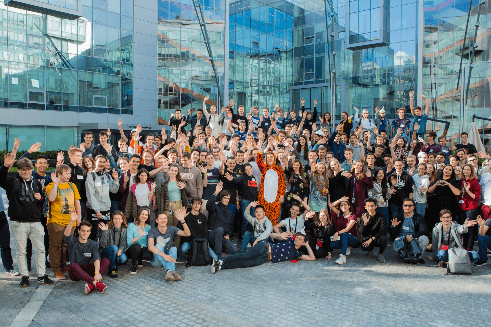

Известная своей поисковой системой, онлайн-сервисами и продуктами, работающими на основе искусственного интеллекта, компания Яндекс является значимым игроком в технологической индустрии и предлагает широкий спектр возможностей для начинающих специалистов в рамках своих программ стажировок. Яндекс предоставляет стажерам стимулирующую среду для обучения, роста и участия в инновационных проектах, которые формируют будущее технологий.

Введение в стажировки Яндекса
Программы стажировок Яндекса разработаны для того, чтобы студенты и молодые специалисты могли получить практический опыт в различных областях, таких как разработка программного обеспечения, наука о данных, управление продуктами, дизайн и многое другое. Участвуя в стажировке в Яндексе, люди получают возможность работать вместе с опытными профессионалами, решать реальные задачи и знакомиться с передовыми технологиями.
Преимущества стажировки в Яндексе
- Профессиональное развитие: Стажеры Яндекса имеют доступ к наставничеству и руководству со стороны экспертов в данной области, что позволяет им значительно расширить свои навыки и знания.
- Инновационные проекты: Яндекс известен своим стремлением к инновациям. Стажеры получают возможность работать над интересными проектами, которые оказывают реальное влияние на компанию и ее пользователей.
- Возможности для налаживания контактов: Стажеры имеют возможность встречаться и общаться с профессионалами в своей области, завязывая отношения, которые могут привести к будущим карьерным возможностям.
- Карьерный рост: Многие бывшие стажеры Яндекса получили постоянную работу в компании или в других ведущих технологических фирмах благодаря навыкам и опыту, полученным во время стажировки.
Программы стажировок Яндекса
- Стажировка в области разработки программного обеспечения
- Стажировка в области науки о данных
- Стажировка по управлению продуктами
- Стажировка по дизайну
Зарегестрироваться
- Направление обучения: IT, Экономика, Дизайн
- Классы обучения: 11
- Места: доступны